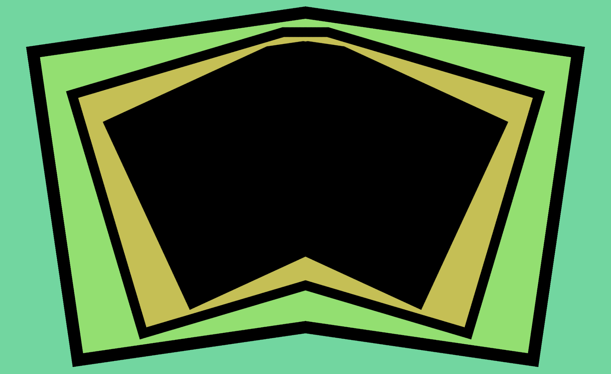
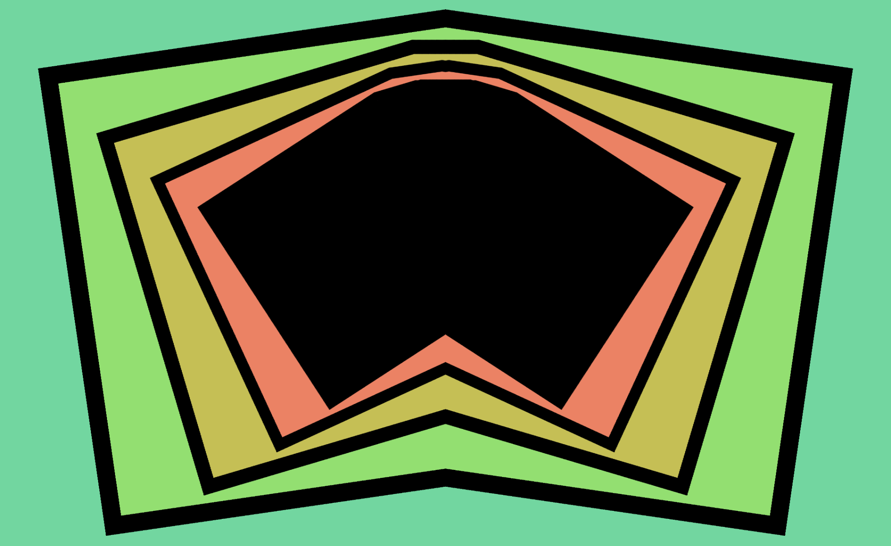
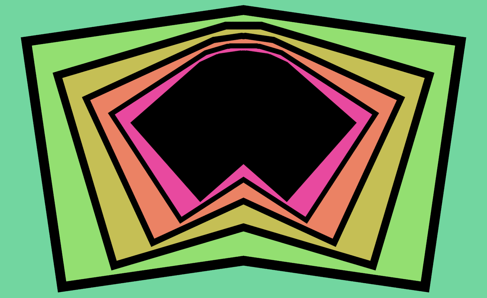
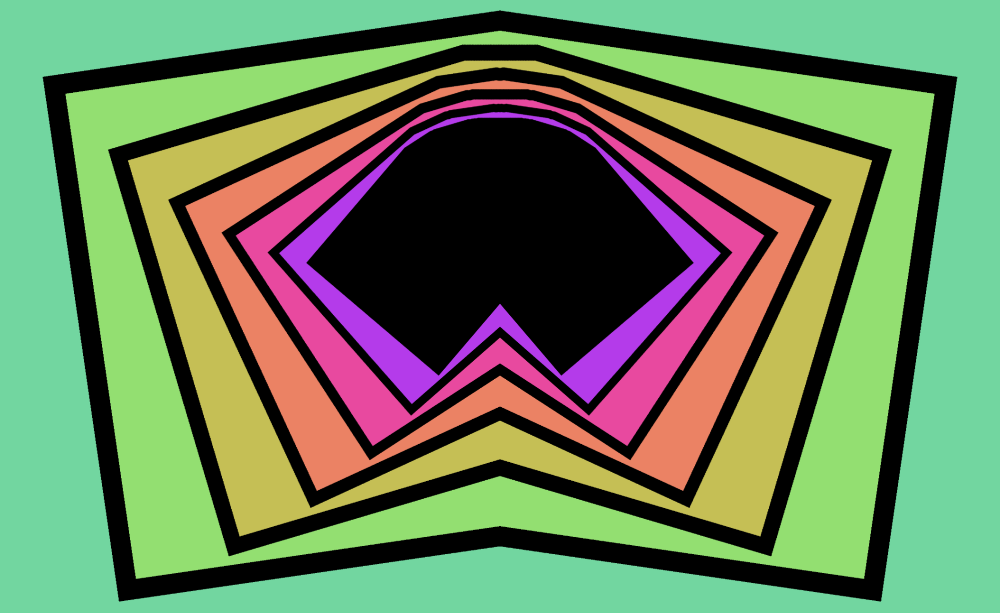
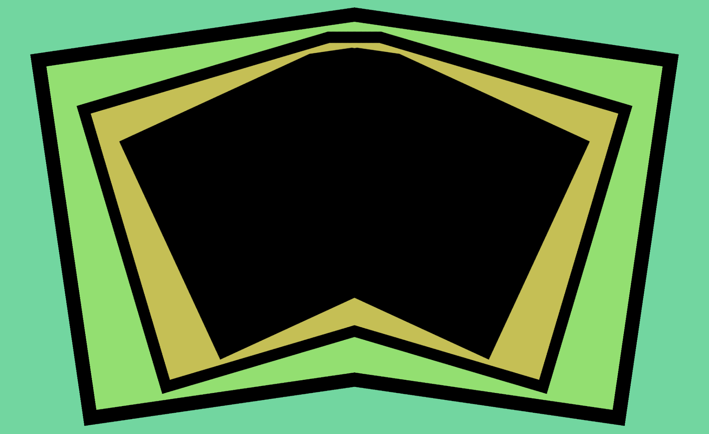
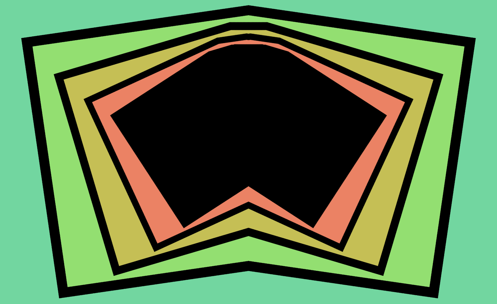
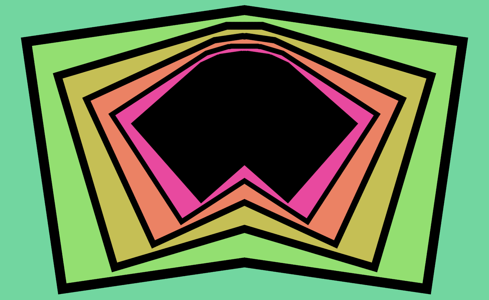
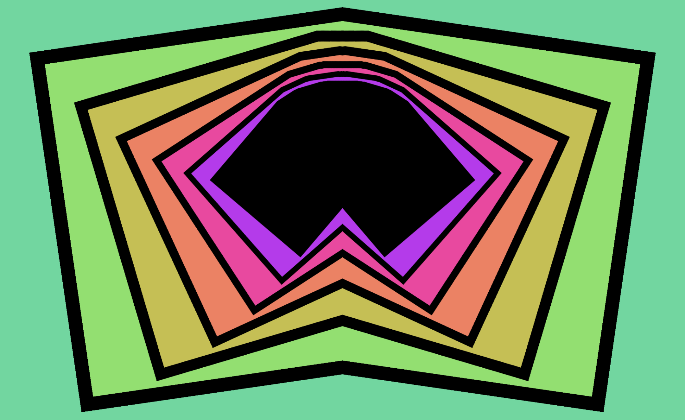

Figure 1. The first five iterations of the starting configuration. Note the shift in hue/saturation as the “iteration depth” increases.
Figure 2. The first few iterations (and final result) of a configuration shifted slightly to the left and tilted, with the “X Mirror” effect on. Before each image is rendered, it is mirrored so that the right side matches the left side; otherwise, its rendering process is the same as that of Figure 1.
Figure 3. The “color cycle” transform makes the iteration depth apparent for different areas of the image.
Figure 4. The background color is set to black, and the border color is set to off-white with a slightly reddish tint. The “Color Cycle” effect is turned off, so the hue does not change with iteration depth. The gain effect highlights the fixed point of the configuration, which is a single point in the middle.
Figure 5. The same configuration as Figure 4, but with the center shifted to the left and the “X Mirror” effect turned on. The “fixed set” has expanded into a line segment.
Figure 6. The same configuration as figure 4, but rotated at different angles. The fixed set is evidenced by the bright red line, which can takes on a fractal shape as its total size increases.
Figure 7. In some configurations, the fixed set takes up two-dimensional space at the resolution of the renderer.#